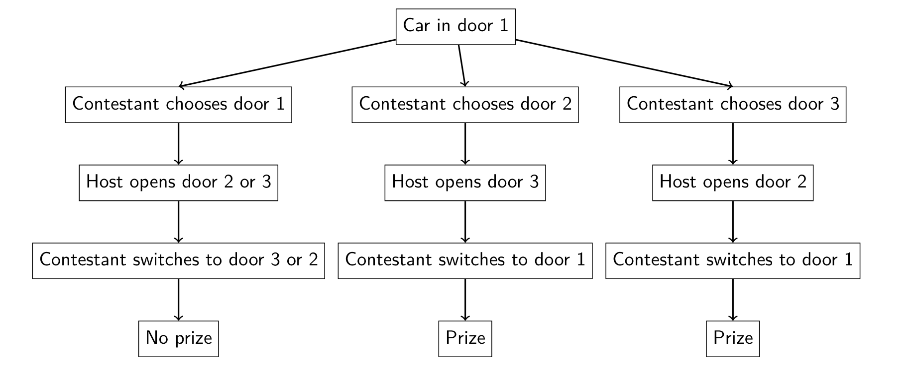
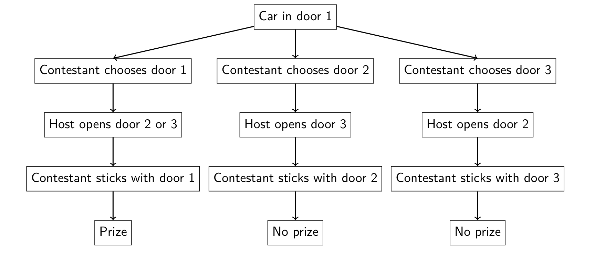

Introduction
The Monty Hall problem, based on the classic game show Let’s Make a Deal, is a captivating brain teaser that has perplexed people for decades. The problem goes like this: a contestant faces three doors, behind one of which is a car, and two goats are behind the other two doors. The contestant picks a door, say Door 1. The host (who knows what is behind each door) opens another door, say Door 3, revealing a goat. The host then asks the contestant if they want to switch to Door 2. Should the contestant switch? [Selvin, 1975]
Intuitively, most people think the odds are 50-50 at this point, so switching has no advantage. However, this is where the paradox lies. The correct strategy is always to switch doors, as it doubles the chances of winning from \(\frac{1}{3}\) to \(\frac{2}{3}\) [Vossavant, 1990]. This counterintuitive solution has stumped many, including renowned mathematician Paul Erdős [Vazsonyi, 1999].
Behavioural Economics Perspective
From a behavioural economics perspective, the Monty Hall problem highlights several cognitive biases that influence decision-making. One such bias is the illusion of control, where people tend to overestimate their ability to control or influence outcomes [Langer, 1975]. In this case, contestants may feel that their initial choice is more likely to be correct, even though the probability has not changed. Another relevant bias is the sunk cost fallacy, where people are reluctant to abandon a choice they’ve already made, even if switching would be advantageous [Arkes and Blumer, 1985].
Bayesian Statistics Perspective
Interestingly, the Monty Hall problem can be elegantly explained using Bayesian statistics. Bayes’ theorem is a mathematical formula that describes how to update probabilities based on new evidence [Bayes and Price, 1763]. In the context of the Monty Hall problem, let us define three events:
- \(A\): The car is behind Door 1
- \(B\): The car is behind Door 2
- \(C\): Host opens Door 3
Using Bayes’ theorem, we can calculate the probability of the car being behind Door 2, given that the host opened Door 3:
\[ P(B \mid C) = \frac{P(C \mid B) \cdot P(B)}{P(C)} \label{eq:bayes} \]
We know that:
\[ P(B) = \frac{1}{3} \quad \text{(initial probability of car being behind Door 2)} \]
\[ P(C \mid B) = 1 \quad \text{(the host must open Door 3 if the car is behind Door 2)} \]
\[ P(C) = \frac{1}{3} \cdot \frac{1}{2} + \frac{1}{3} \cdot 0 + \frac{1}{3} \cdot 1 = \frac{1}{2} \quad \text{(probability of host opening Door 3)} \]
To clarify the calculation of \(P(C)\), let us consider all possible scenarios where the host opens Door 3:
\[ \begin{aligned} P(\text{Car@1 and Host opens 3}) &= P(\text{Car@1}) \times P(\text{Host opens 3} \mid \text{Car@1}) = \frac{1}{3} \times \frac{1}{2} = \frac{1}{6} \\ P(\text{Car@2 and Host opens 3}) &= P(\text{Car@2}) \times P(\text{Host opens 3} \mid \text{Car@2}) = \frac{1}{3} \times 1 = \frac{1}{3} \\ P(\text{Car@3 and Host opens 3}) &= P(\text{Car@3}) \times P(\text{Host opens 3} \mid \text{Car@3}) = \frac{1}{3} \times 0 = 0 \end{aligned} \]
Summing these probabilities:
\[ P(C) = \frac{1}{6} + \frac{1}{3} + 0 = \frac{1}{2} \]
Plugging the values into Equation \(\ref{eq:bayes}\):
\[ P(B \mid C) = \frac{1 \cdot \frac{1}{3}}{\frac{1}{2}} = \frac{2}{3} \]
This calculation confirms that switching doors yields a \(\frac{2}{3}\) probability of winning [Gill, 2002].
Visualisation of the Monty Hall Problem
Another intuitive way to understand the Monty Hall problem is through a probability tree diagram. The diagrams below illustrate the possible outcomes and their probabilities for the case when the car is behind Door 1:
\[ P(\text{prize} \mid \text{switch}) = \frac{2}{3} \]

Figure 1: Probability Tree Diagram - Switching
\[ P(\text{prize} \mid \text{not switch}) = \frac{1}{3} \]

Figure 2: Probability Tree Diagram - Not Switching
Conclusion
The Monty Hall problem offers valuable insights for behavioural economists. It demonstrates how our intuitive judgments can lead us astray and highlights the importance of rigorous statistical thinking in decision-making [Kahneman and Tversky, 1979]. By understanding the cognitive biases at play and applying tools like Bayes’ theorem, we can make more informed and rational choices.
References
- Arkes, H. R., & Blumer, C. (1985). The psychology of sunk cost. Organizational Behavior and Human Decision Processes, 35(1), 124-140.
- Bayes, T., & Price, R. (1763). An essay towards solving a problem in the doctrine of chances. Philosophical Transactions of the Royal Society of London, 53, 370-418.
- Burns, B. D., & Wieth, M. (2004). The collider principle in causal reasoning: Why the Monty Hall dilemma is so hard. Journal of Experimental Psychology: General, 133(3), 434-449.
- Franco-Watkins, A. M., & Derks, P. L. (2010). Reasoning in the Monty Hall problem: Examining choice behaviour and probability judgements. Thinking & Reasoning, 16(1), 1-17.
- Gill, J. (2002). Bayesian methods: A social and behavioural sciences approach. Chapman and Hall/CRC.
- Kahneman, D., & Tversky, A. (1979). Prospect theory: An analysis of decision under risk. Econometrica, 47(2), 263-291.
- Langer, E. J. (1975). The illusion of control. Journal of Personality and Social Psychology, 32(2), 311-328.
- Selvin, S. (1975). A problem in probability. The American Statistician, 29(1), 67.
- Tenenbaum, J. B., Kemp, C., Griffiths, T. L., & Goodman, N. D. (2011). How to grow a mind: Statistics, structure, and abstraction. Science, 331(6022), 1279-1285.
- Vazsonyi, A. (1999). Which door has the Cadillac? Decision Line, 30(1), 17-19.
- vos Savant, M. (1990). Ask Marilyn. Parade Magazine, 15, 12.